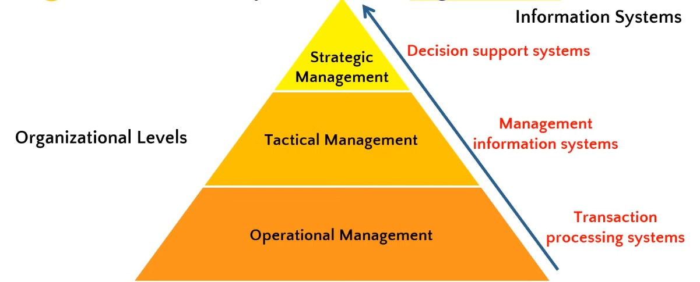

Los Sistemas de información están definicos, comunmente, por medio de una piramide, donde en la parte superior se ubican las personas mas importantes, de la empresa y en la parte del final los trabajadores de la empresa/organización que utiliza el SI, así:
Están encargados de las acciones del día a día.
Además estos cuentan con reglas predefinidas para decidir cómo actuar ante ciertas situaciones. El sistema que se usa en este nivel
es el TPS.
Estas transacciones pueden ser entre:
Este nivel se encarga de supervisar las actividades de los usuarios y se centran en eficiencia de las operaciones. A su vez, se encargan de tomar decisionies
basadas en ciertas pautas establecidas, pero también en su propio juicio.
Acá se incluyen los jefes de departamento, managers y supervisores. El sistema que se usa es el MIS.
Son utilizados para monitorear, controlar y predecir el futuro cercano en cuantoa decisiones se refiere. Para ello hacen uso de sumarios, comparaciones, etc. que se realizan en base a la información que se recopila de las diferntes TPS.
Este nivel se encarga de tomar las decisiones de largo plazo de la entidad, esto incluye la planeación y operación de la organización.
También se encargan de tomar decisiones de caracter complejo.
Para tomar estas decisiones, el sistema que se utiliza es el DSS.
Es usado para tomar decisiones no convencionales, que se salen de la cotidianidad, por ello se consideran decisiones complejas.
Para tomar las decisiones los miembros de este grupo utilizan técnicas matemáticas, estadísticas, e incluso llegan a incluir inteligencias artificiales que los guíen a tomar
la mejor decision para la entidad.